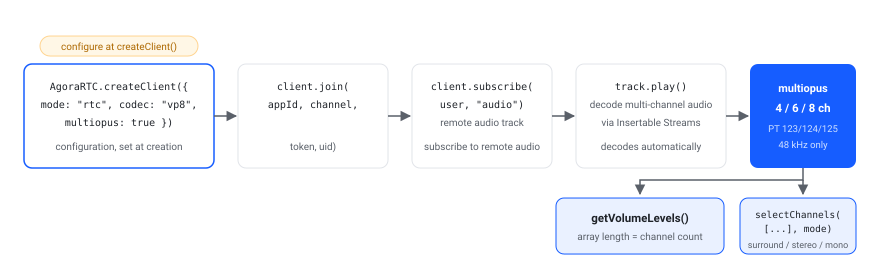
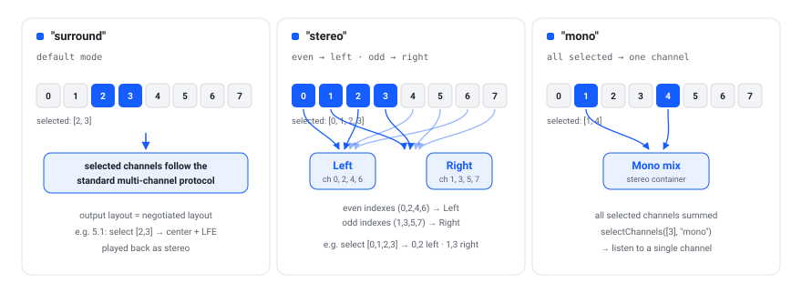
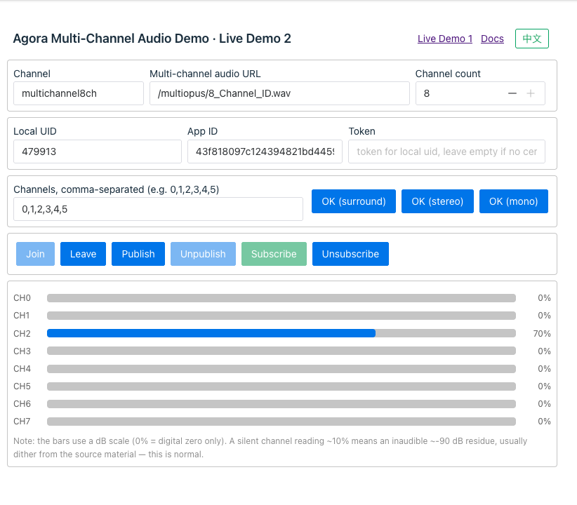

Web SDK 音频多声道（multiopus）
适用版本：agora-rtc-sdk-ng 4.20.1-100 / 4.20.1-200（多声道版本），Chrome 96+
〇、SDK 版本与下载
-
本仓库 Demo/web 使用
agora-rtc-sdk-ng@4.20.1-200；设计文档对应版本为agora-rtc-sdk-ng@4.20.1-100。 -
npm 包：除
agora-rtc-sdk-ng外，多声道版本还包含@agora-js/media、@agora-js/report、@agora-js/shared。 - CDN / 完整包： AgoraRTC_N-4.20.1-100.js、 Agora_Web_SDK_v4_20_1-100_FULL.zip。
- Web SDK 最多支持 8 声道解码，16 声道及以上不支持。
一、功能说明
1.1 能力开关 ENABLE_MULTIOPUS_CODEC
多声道能力通过私参开关开启：
AgoraRTC.setParameter("ENABLE_MULTIOPUS_CODEC", true)。
必须在 AgoraRTC.createClient() 之前设置，创建 client 后再设置不生效。
未开启时订阅端按普通单/双声道处理，无法解出多声道。开启后订阅/发布走 ORTC multiopus 协商
（payload type 123/124/125，按声道数区分，见本文第三章与首页映射表；clockRate 48000、fmtp 含 channel_mapping / coupled_streams / num_streams）。

1.2 多声道发布
通过 AgoraRTC.createCustomAudioTrack({ mediaStreamTrack, channelCount })
将多声道音频发布为 OPUSMC 流；channelCount 支持 4 / 6 / 8，
SDK 依据该值生成发布用的 custom_payload_type。本地音轨的
channelCount 属性为创建时设定值。声道路由（哪路对应哪个逻辑声道）由发布素材与业务约定决定，
SDK 不做声道重排；广播场景下应与 Linux 侧的布局映射
（T1L,T1R,T2L,T2R,T3L,T3R,T4L,T4R）保持一致。
注：部分早期设计文档示例使用 createMultiAudioTrack，在本版多声道 SDK 中对应
AgoraRTC.createCustomAudioTrack({ mediaStreamTrack, channelCount })。
1.3 订阅与 channelCount
client.subscribe(user, "audio") 成功后调用 track.play() 即按多声道解码播放。
远端音轨的 channelCount 属性来自 on_add_audio_stream 信令中的 pt 值，
反映信令协商的声道数（4/6/8）。仅支持偶数声道解码；3/5/7 奇数声道流不报错但会按
N+1 偶数声道误解码（末声道复制出幻影声道、音量条误判多声道 ✓），结果不可信
（2026-10-12 实测，见仓库 Test/odd_channels_interop_test_20261012.md §5）。
代码级根因：SDK 的 multiopus 声道表写死为偶数（4 + 2 * t），
SDP fmtp 与拆声道数量都查该表——浏览器（Chrome 内置 multi-channel opus 解码器）只是按
错误声明忠实解码。修复需 SDK 按流的真实配置生成/使用 fmtp，而非查偶数表。
过渡方案：本仓库 Demo/web 已内置运行时补丁（src/oddChannelFix.ts，
检测「末两声道恒等」签名后修正显示声道数与播放输出，3/5/7 实测通过，见同文档 §6）；
三个 Live Demo 操作区均有「奇数声道补丁」开关，关掉可对比 SDK 原始（误）行为。
1.4 selectChannels 声道选择（三种模式）
本地与远端多声道音轨均支持
selectChannels(channels, mode)（channels 为声道序号数组，从 0 开始，
mode 默认 "surround"）：
| 模式 | 行为 |
|---|---|
surround |
按标准多声道协议输出所选声道；例如 5.1 布局中选择声道 2（中置）与声道 3（LFE）可按立体声播放 |
stereo |
按声道序号（0 起）的奇偶混音，与在所选列表中的位置无关：序号 0,2,4,6… 入左、1,3,5,7… 入右，输出立体声。例如选 0,1,2,3 时 0、2 在左，1、3 在右；选 1,2 时则 2 在左、1 在右 |
mono |
所选声道全部混为单声道（输出为立体声容器） |
声道选择基于 Insertable Streams（MediaStreamTrackProcessor / Generator）实现， 绕开 Chrome WebAudio 缺陷（chromium issue 1116042），可播放 8 个声道的任意组合。

1.5 getVolumeLevels 逐声道音量
getVolumeLevels() 返回全部声道的实时音量数组（0~1）；传入声道列表
（如 [0, 1, 2]）时仅返回所列声道。返回数组长度等于实际解码声道数，
可作为多声道是否生效的判定依据。
注意：音量柱是 dB 宽量程刻度，静音声道可能不归零，且底数随发送端素材类型不同而不同。
音量公式为 (dBFS_RMS + 100) / 100，仅当解码样本精确为数字零时才显示 0%。
实测（Linux→Web）：静音段含 dither（-84 dB）的 16bit 素材经编码传输后残余约 -90 dB，
静音声道音量柱显示约 10%（实测 4.6~12%，dB 刻度下 -90dB 残余的读数）；静音段为精确数字零的 24bit 素材则精确显示 0%。
该残余不可闻、非 SDK 缺陷——逐声道内容核对请以 selectChannels + 试听为准，
读音量柱时把 ~10% 视为无声。完整排查记录见
Test/web_volume_meter_floor_linux2web.md。
注意：订阅成功后的前 ~0.5s，返回数组长度存在“爬坡”，会从 1~2 路逐步展开到实际声道数。
多声道解码管线（Insertable Streams）是渐进建立的，期间 getVolumeLevels() 可能只返回
1~2 路，约 0.5s 后才展开为实际声道数（如 8）。这是管线的固有行为，并非流内容发生了变化。
集成方不要在订阅初期凭首次读到的数组长度直接判定“单声道 / 已回退”——该窗口内
会得到短暂的假单声道结论。建议：等声道数稳定后再下结论（如连续 ~1s 多次轮询长度一致），或与
getStats codec、信令 channelCount 交叉验证；出现多声道证据（长度 4/6/8 或 codec=multiopus）
则可立即采信。本仓库 web demo 的判定逻辑即采用“声道数稳定后才允许出单声道结论”的策略。
1.6 浏览器兼容性
| 浏览器 | 支持情况 |
|---|---|
| Chrome 94 / 95 | 相关接口默认关闭，需手动开启，不推荐 |
| Chrome 96 ~ 109 | 96 起正式支持；取消订阅后的重协商差异已做兼容 |
| Chrome 110+ | 完全支持（推荐） |
| Edge 79+（Chromium 内核） | 预期与 Chrome 等价（未经官方验证，建议实测后再采用） |
| Android Chrome / WebView（内核 96+） | 引擎继承，预期可用（未经官方验证）；移动端限制：外放立体声 downmix、需用户手势出声、后台标签页挂起 |
| iOS 所有浏览器 / WKWebView | 不支持（App Store 政策下均为 WebKit 引擎，无 multiopus 路径） |
| Safari / Firefox | 不支持；加入多声道频道行为未定义——可能无声或仅立体声 |
1.7 回退表现
- Linux 发送时：不支持多声道的端加入会触发发送端回退为普通 Opus，Web 订阅端可观测到 codec 由
multiopus变为opus、声道数下降；发送端可用che.audio.codec_unfallback强制不回退（设置位置要求见 Linux SDK 文档）。 - Web 发送时：不支持端加入不触发回退，该端听不到声音。使用多声道时应保证频道内所有参与者均支持多声道。
二、集成指南
2.1 订阅链路（典型场景）
// 1. 开启 multiopus（必须在 createClient 之前）
AgoraRTC.setParameter("ENABLE_MULTIOPUS_CODEC", true);
// 2. 创建 client 并加入频道
const client = AgoraRTC.createClient({ mode: "rtc", codec: "vp8" });
await client.join(appId, channel, token, uid);
// 3. 订阅目标远端音频并播放
const track = await client.subscribe(user, "audio");
track.play();
// 4. 判定声道数：返回数组长度 = 实际解码声道数
const levels = track.getVolumeLevels(); // 8 声道流 → 长度 8
// 5. 声道选择播放（任意声道组合）
track.selectChannels([0, 1], "stereo"); // 0,2,4,6→左；1,3,5,7→右
track.selectChannels([3], "mono"); // 逐声道试听
track.selectChannels([0,1,2,3,4,5,6,7], "surround");2.2 发布链路（多声道 WAV）
// 1. fetch 素材并用 Web Audio 解码
const audioCtx = new AudioContext();
const buffer = await audioCtx.decodeAudioData(
await (await fetch("8_Channel_ID.wav")).arrayBuffer());
// 2. 显式 channelCount 的 MediaStreamDestination（避免被 down-mix 成立体声）
const dest = audioCtx.createMediaStreamDestination();
dest.channelCount = 8;
dest.channelCountMode = "explicit";
dest.channelInterpretation = "discrete";
const source = audioCtx.createBufferSource();
source.buffer = buffer;
source.connect(dest);
source.start();
// 3. channelCount 驱动 SDK 生成发布用 custom_payload_type
const track = await AgoraRTC.createCustomAudioTrack({
mediaStreamTrack: dest.stream.getAudioTracks()[0],
channelCount: 8,
});
await client.publish(track);
以上代码从本仓库 Demo/web/src/Multiopus.vue 简化而来；素材循环播放可通过
source.onended 重新挂载实现。
2.3 判定方法
| 判据 | 多声道生效 | 未生效 |
|---|---|---|
getVolumeLevels() 返回数组长度 |
= 实际声道数（4/6/8） | 1（单声道） |
| getStats inbound codec | multiopus |
opus |
远端音轨 channelCount（信令 pt 值） |
4 / 6 / 8 | — |
getStats 读取底层 codec 需 hook RTCPeerConnection.getStats()（demo 层手段，
非 SDK 公开 API），本仓库 demo 按 800 ms 间隔持续轮询，既容忍协商延迟，也可观测订阅期间的回退。
另需注意订阅初期的声道数爬坡：getVolumeLevels() 在订阅成功后约 0.5s 内会先从
1~2 路逐步展开到实际声道数，此窗口内按数组长度判定会得到短暂的“单声道”假结论——判定逻辑应
等声道数稳定后再下结论（详见 1.5 节说明）。
2.4 Demo 与在线验证
- 在线 demo：https://xiaoyingtao.convoai.club/multiopus/（Chrome 96+）。 支持双标签页自收发：一个标签页以 Publisher uid 发布多声道 WAV，另一个以 Subscriber uid 订阅检测；结果面板显示逐声道音量条与 codec 判定。
-
本仓库 demo：
Demo/web/（Vue3 + Vite），npm install && npm run dev后访问 http://localhost:5173/。 内置 4/6/8 声道 Channel ID 素材；URL 参数channel/uid/subTo控制角色。 详细用法见Demo/web/README.md。 - 配合 Linux demo：Linux 端以 8 声道 OPUSMC 发布后，Web 订阅端预期音量条出现 8 路、 codec 为 multiopus、远端 channelCount 为 8；用「声道选择」逐路试听可核对 T1L,T1R,…,T4R 布局映射。

三、ORTC 协商与技术细节
开启 ENABLE_MULTIOPUS_CODEC 后，Web SDK 与 VOS 之间按 ORTC 协商 multiopus。
以 6 声道为例，远端 SDP / ORTC 中会出现类似如下参数：
{
"payloadType": 124,
"rtpMap": {
"clockRate": 48000,
"encodingName": "multiopus",
"encodingParameters": 6
},
"fmtp": {
"parameters": {
"channel_mapping": "0,1,2,3,4,5",
"coupled_streams": "3",
"num_streams": "3",
"minptime": "10",
"useinbandfec": "1"
}
}
}encodingParameters为协商的声道数（4/6/8）。coupled_streams表示“两个声道编码为一条流”的流数量；num_streams为总流数；总声道数 =coupled_streams+num_streams。channel_mapping为编码声道到输出声道的映射；当前 3~8 声道均为顺序映射0,1,2,…。- 已知限制（2026-10-12 源码确认）：SDK 的 multiopus 声道表只含偶数声道
（
4 + 2 * t→ 4/6/8），fmtp 的coupled_streams/num_streams均按该表生成。 收到 3/5/7 奇数声道流时 SDP 声明与实际流不符，浏览器按错误配置解码，末声道被复制出幻影声道 （详见Test/odd_channels_interop_test_20261012.md§5）。 -
声道选择没有使用 WebAudio，而是基于 Insertable Streams（
MediaStreamTrackProcessor / MediaStreamTrackGenerator）实现， 以绕开 Chrome WebAudio 在多声道输出上的缺陷（chromium issue 1116042）。
Web SDK Audio Multi-Channel (multiopus)
Applies to: agora-rtc-sdk-ng 4.20.1-100 / 4.20.1-200 (multi-channel builds), Chrome 96+
0. SDK Version and Download
-
This repo's
Demo/webusesagora-rtc-sdk-ng@4.20.1-200; the design doc version isagora-rtc-sdk-ng@4.20.1-100. -
NPM packages: in addition to
agora-rtc-sdk-ng, the multi-channel build also includes@agora-js/media,@agora-js/report, and@agora-js/shared. - CDN / full package: AgoraRTC_N-4.20.1-100.js, Agora_Web_SDK_v4_20_1-100_FULL.zip.
- The Web SDK supports up to 8-channel decode; 16 channels and above are not supported.
1. Feature Description
1.1 The ENABLE_MULTIOPUS_CODEC switch
Multi-channel is enabled with a private switch:
AgoraRTC.setParameter("ENABLE_MULTIOPUS_CODEC", true).
It must be set before AgoraRTC.createClient(); setting it after the
client is created has no effect. Without the switch, a subscriber treats the stream as plain
mono/stereo and cannot decode the multiple channels. With the switch on, subscribe and publish
negotiate multiopus over ORTC (payload types 123/124/125 by channel count — see Chapter 3 below and the mapping table on the home page; clockRate 48000, fmtp with
channel_mapping / coupled_streams / num_streams).
1.2 Multi-channel publishing
Publish multi-channel audio as an OPUSMC stream with
AgoraRTC.createCustomAudioTrack({ mediaStreamTrack, channelCount }).
channelCount supports 4 / 6 / 8, and the SDK uses it to generate the
custom_payload_type for publishing. The local track's channelCount
property returns the value set at creation time. Channel routing (which track maps to which
logical channel) is defined by the material and your business convention — the SDK does not
reorder channels; in broadcast scenarios it should match the Linux-side layout mapping
(T1L,T1R,T2L,T2R,T3L,T3R,T4L,T4R).
Note: some early design-doc samples use createMultiAudioTrack; in this
multi-channel SDK version the corresponding API is
AgoraRTC.createCustomAudioTrack({ mediaStreamTrack, channelCount }).
1.3 Subscribing and channelCount
After client.subscribe(user, "audio") succeeds, calling track.play()
plays the stream decoded as multi-channel. The remote track's channelCount property
comes from the pt value in the on_add_audio_stream signaling and reflects the
negotiated channel count (4/6/8). Only even channel counts can be decoded; a 3/5/7-channel
stream raises no error but is mis-decoded as the next even channel count (the last channel is
duplicated into a phantom one and the volume bars misjudge it as multi-channel ✓) — results are
untrustworthy (verified 2026-10-12, see Test/odd_channels_interop_test_20261012.md §5 in the repo).
Root cause at code level: the SDK's multiopus channel table is hardcoded to even counts
(4 + 2 * t), and both the SDP fmtp and the frame-splitting count are derived from it —
the browser (Chrome's built-in multi-channel opus decoder) simply decodes faithfully per the
wrong declaration. The fix belongs to the SDK: use the stream's real configuration instead of
the even-count table. Interim workaround: this repo's Demo/web ships a runtime patch
(src/oddChannelFix.ts) that detects the "last two channels sample-identical"
signature and then corrects the displayed channel count and playback output — verified for
3/5/7 (see §6 of the same document). All three Live Demos have an "Odd-channel fix" switch in
the operation row; switch it off to compare against the raw (mis-decoded) SDK behavior.
1.4 selectChannels (three modes)
Both local and remote multi-channel tracks support
selectChannels(channels, mode) (channels is an array of zero-based
channel indexes; mode defaults to "surround"):
| Mode | Behavior |
|---|---|
surround |
Outputs the selected channels per the standard multi-channel protocol; for example, selecting channel 2 (center) and channel 3 (LFE) of a 5.1 layout plays back as stereo |
stereo |
Mixes by the parity of the channel index (0-based), independent of position in the selected list: indexes 0,2,4,6… go left and 1,3,5,7… go right, producing stereo. For example, with 0,1,2,3 selected, channels 0 and 2 go left and 1 and 3 go right; with 1,2 selected, channel 2 goes left and 1 goes right |
mono |
Mixes all selected channels into a single channel (output is a stereo container) |
Channel selection is implemented with Insertable Streams (MediaStreamTrackProcessor / Generator) to work around a Chrome WebAudio defect (chromium issue 1116042), making it possible to play any combination of the 8 channels.
1.5 Per-channel volume with getVolumeLevels
getVolumeLevels() returns the real-time volume of every channel as an array (0–1);
pass a channel list (for example [0, 1, 2]) to get only those channels.
The returned array length equals the actual decoded channel count, which makes
it a reliable signal for whether multi-channel is in effect.
Note: the volume bars use a wide-range dB scale, so silent channels may not read
zero — and the floor varies with the sender's source material. The level formula is
(dBFS_RMS + 100) / 100, and only exact digital zeros show 0%. In Linux→Web
testing, 16-bit material whose silent segments carry dither (−84 dB) left about −90 dB of
residue after encoding, so silent channels read ≈10% (measured 4.6–12%, the dB-scale reading of a -90 dB residue), while 24-bit material with exact
digital zeros read exactly 0%. The residue is inaudible and is not an SDK defect — for
per-channel content verification, rely on selectChannels plus listening, and
treat a ~10% reading as silence. Full investigation:
Test/web_volume_meter_floor_linux2web_en.md.
Note: during the first ~0.5 s after subscribing, the returned array ramps up from 1–2
channels to the actual channel count. The multi-channel decode pipeline (Insertable
Streams) is established progressively, so getVolumeLevels() may report only 1–2
channels at first and expands to the real count (for example 8) within about 0.5 s. This is
inherent pipeline behavior, not a change in the stream. Do not conclude "mono /
fallback" from the first readings right after subscribing — the transient values
produce a false mono verdict. Instead, wait until the channel count is stable (for example,
the same length across ~1 s of consecutive polls), or cross-check with the getStats codec and
the signaling channelCount. Multi-channel evidence (length 4/6/8, or codec=multiopus) can be
trusted immediately. This repo's web demo gates its mono verdict on exactly such a stability
window.
1.6 Browser compatibility
| Browser | Support |
|---|---|
| Chrome 94 / 95 | The relevant interfaces are disabled by default and must be enabled manually — not recommended |
| Chrome 96 – 109 | Official support starts at 96; the renegotiation differences after unsubscribing have been made compatible |
| Chrome 110+ | Fully supported (recommended) |
| Edge 79+ (Chromium-based) | Expected to be equivalent to Chrome (not officially verified — test before adopting) |
| Android Chrome / WebView (kernel 96+) | Engine-inherited, expected to work (not officially verified); mobile limits: stereo output downmix, user gesture required for audio, background-tab suspension |
| All iOS browsers / WKWebView | Not supported (WebKit engine under App Store policy — no multiopus path) |
| Safari / Firefox | Not supported; joining a multi-channel channel has undefined behavior — possibly silence or stereo only |
1.7 Fallback behavior
- When Linux is sending: an unsupported endpoint joining triggers the sender to fall back to plain Opus; a Web subscriber can observe the codec changing from
multiopustoopuswith a reduced channel count. The sender can force no-fallback withche.audio.codec_unfallback(see the Linux SDK doc for its placement requirement). - When Web is sending: an unsupported endpoint joining does not trigger fallback, and that endpoint hears nothing. All participants in the channel should support multi-channel when using this feature.
2. Integration Guide
2.1 Subscribe chain (typical scenario)
// 1. Enable multiopus (must be before createClient)
AgoraRTC.setParameter("ENABLE_MULTIOPUS_CODEC", true);
// 2. Create the client and join the channel
const client = AgoraRTC.createClient({ mode: "rtc", codec: "vp8" });
await client.join(appId, channel, token, uid);
// 3. Subscribe to the target remote audio and play it
const track = await client.subscribe(user, "audio");
track.play();
// 4. Detect the channel count: array length = decoded channels
const levels = track.getVolumeLevels(); // 8-channel stream → length 8
// 5. Channel-selective playback (any combination)
track.selectChannels([0, 1], "stereo"); // 0,2,4,6→left; 1,3,5,7→right
track.selectChannels([3], "mono"); // listen to one channel
track.selectChannels([0,1,2,3,4,5,6,7], "surround");2.2 Publish chain (multi-channel WAV)
// 1. Fetch the material and decode it with Web Audio
const audioCtx = new AudioContext();
const buffer = await audioCtx.decodeAudioData(
await (await fetch("8_Channel_ID.wav")).arrayBuffer());
// 2. MediaStreamDestination with explicit channelCount (avoids down-mix to stereo)
const dest = audioCtx.createMediaStreamDestination();
dest.channelCount = 8;
dest.channelCountMode = "explicit";
dest.channelInterpretation = "discrete";
const source = audioCtx.createBufferSource();
source.buffer = buffer;
source.connect(dest);
source.start();
// 3. channelCount drives the SDK to generate the publish custom_payload_type
const track = await AgoraRTC.createCustomAudioTrack({
mediaStreamTrack: dest.stream.getAudioTracks()[0],
channelCount: 8,
});
await client.publish(track);
The code above is simplified from Demo/web/src/Multiopus.vue in this repo; loop
playback can be implemented by re-attaching the source in source.onended.
2.3 How to verify
| Signal | Multi-channel works | Not working |
|---|---|---|
Length of the getVolumeLevels() array |
= actual channel count (4/6/8) | 1 (mono) |
| getStats inbound codec | multiopus |
opus |
Remote track channelCount (pt value from signaling) |
4 / 6 / 8 | — |
Reading the underlying codec requires hooking RTCPeerConnection.getStats()
(a demo-level technique, not a public SDK API). This repo's demo polls every 800 ms continuously — tolerating negotiation delay and catching any fallback during subscription.
Also beware of the subscription ramp-up: for about 0.5 s after subscribing,
getVolumeLevels() expands from 1–2 channels to the actual count, so judging by the
array length during this window yields a transient false "mono" verdict — gate the verdict on a
stable channel count (see section 1.5).
2.4 Demos and online verification
- Online demo: https://xiaoyingtao.convoai.club/multiopus/ (Chrome 96+). Supports two-tab self-verification: one tab publishes a multi-channel WAV with the Publisher uid, the other subscribes with the Subscriber uid; the result panel shows per-channel volume bars and the codec verdict.
-
Demo in this repo:
Demo/web/(Vue3 + Vite). Runnpm install && npm run devand open http://localhost:5173/. Built-in 4/6/8-channel Channel ID material; the URL parameterschannel/uid/subTocontrol the role. SeeDemo/web/README.mdfor details. - With the Linux demo: after the Linux side publishes an 8-channel OPUSMC stream, the Web subscriber should show 8 volume bars, codec multiopus, and a remote channelCount of 8; use channel selection to listen track by track and verify the T1L,T1R,…,T4R layout mapping.
3. ORTC Negotiation and Technical Details
With ENABLE_MULTIOPUS_CODEC enabled, the Web SDK negotiates multiopus with VOS over ORTC.
Taking 6 channels as an example, the remote SDP / ORTC parameters look like:
{
"payloadType": 124,
"rtpMap": {
"clockRate": 48000,
"encodingName": "multiopus",
"encodingParameters": 6
},
"fmtp": {
"parameters": {
"channel_mapping": "0,1,2,3,4,5",
"coupled_streams": "3",
"num_streams": "3",
"minptime": "10",
"useinbandfec": "1"
}
}
}encodingParametersis the negotiated channel count (4/6/8).coupled_streamsis the number of streams that encode two channels together;num_streamsis the total stream count. Total channels =coupled_streams+num_streams.channel_mappingmaps encoded channels to output channels; for current 3–8 channel configurations it is the sequential mapping0,1,2,….- Known limitation (confirmed from source code, 2026-10-12): the SDK's multiopus
channel table contains only even counts (
4 + 2 * t→ 4/6/8), and the fmtpcoupled_streams/num_streamsare generated from that table. For 3/5/7-channel streams the SDP declaration mismatches the actual stream; the browser decodes per the wrong configuration and the last channel gets duplicated into a phantom one (seeTest/odd_channels_interop_test_20261012.md§5). -
Channel selection is not implemented with WebAudio, but with Insertable Streams
(
MediaStreamTrackProcessor / MediaStreamTrackGenerator) to work around a Chrome WebAudio defect (chromium issue 1116042).